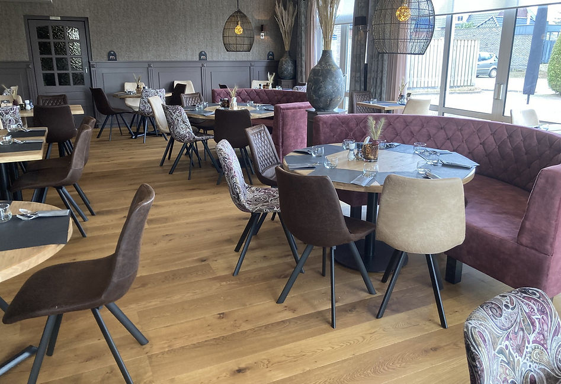
Restaurant
Een ruime kaart met vlees, vis en vegetarische gerechten, geserveerd met aardappelgarnituur en groenten. Ook met kindermenu's.
Naar de menukaartMaandag gesloten, andere dagen vanaf 10.00 uur
Restaurant, grand café en feestzaal in Casteren, met een verwarmd terras.
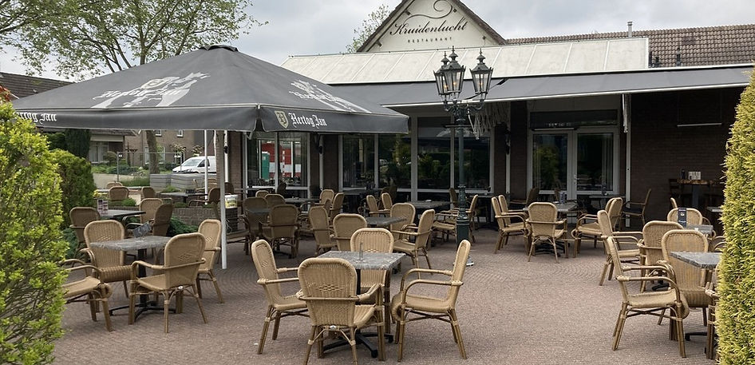
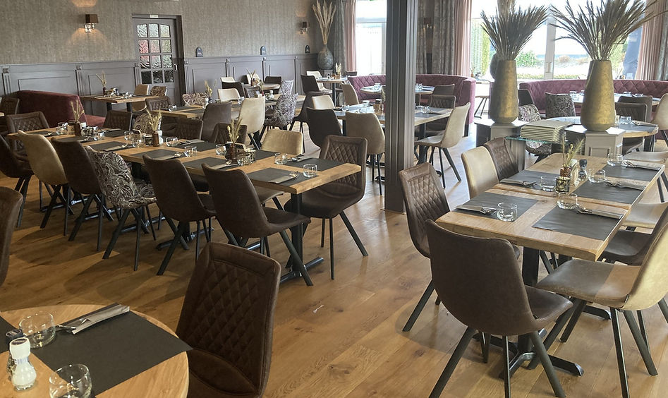
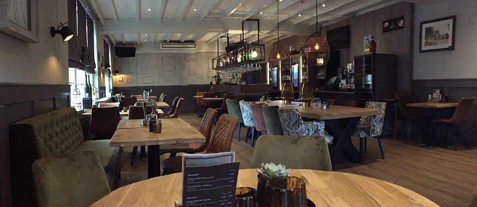
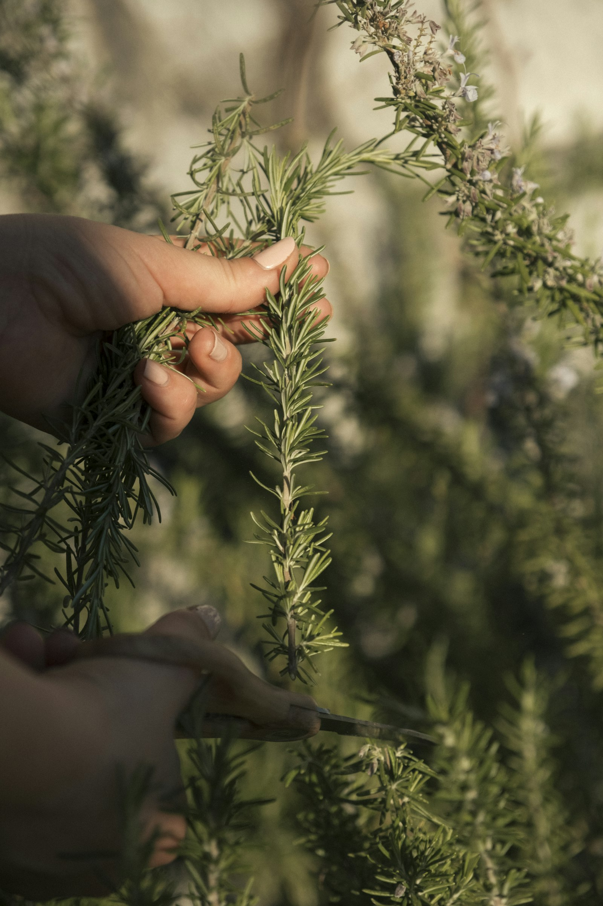
Restaurant, grand café en terras: dinsdag t/m zondag vanaf 10.00 uur
Lekker eten in het restaurant, een drankje in het grand café of buiten op het terras. En voor je feest is er de grote zaal.

Een ruime kaart met vlees, vis en vegetarische gerechten, geserveerd met aardappelgarnituur en groenten. Ook met kindermenu's.
Naar de menukaart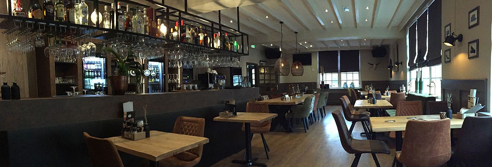
Gezellig vertoeven met speciale koffie in diverse smaken, gebak, wijnen, cocktails en allerlei soorten bier. Ook voor kleinere feestjes.
Naar de grand café kaart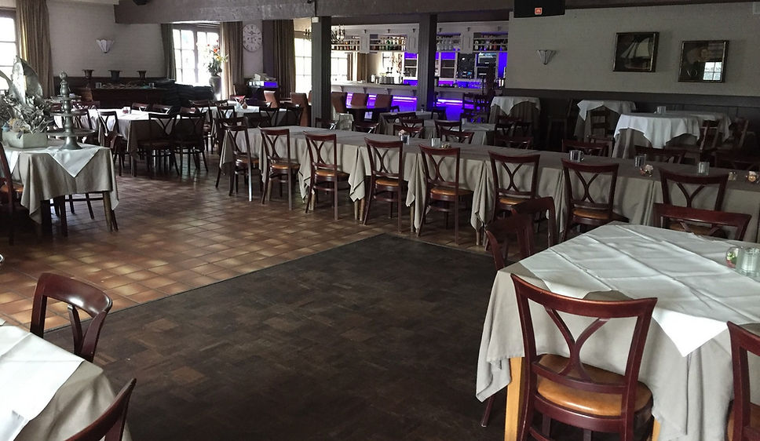
Voor recepties en feesten, van bruiloft tot jubileum. Met dansvloer en bar, en buffet of diner naar wens.
Over de feestzaalGezellig vertoeven met een lekker drankje en heerlijk eten, met een eigen kaart voor lunch en borrel. Ook uitermate geschikt voor kleinere feestjes, zoals verjaardagen.
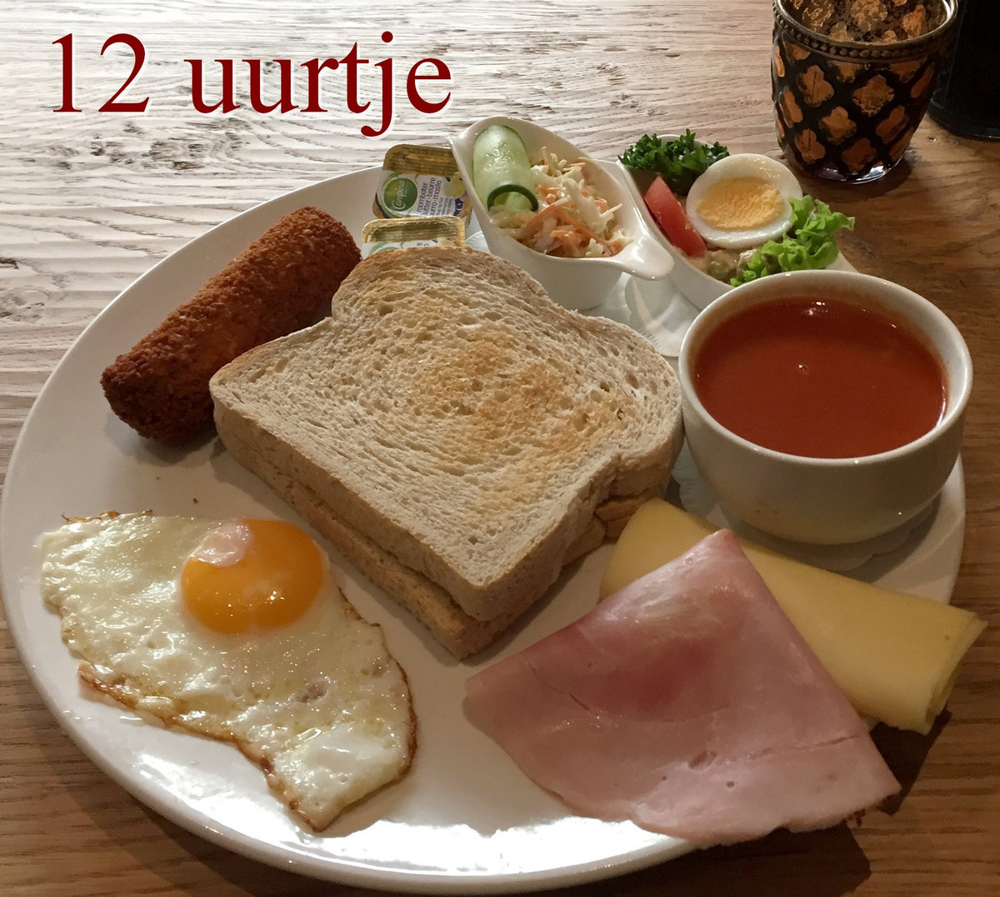
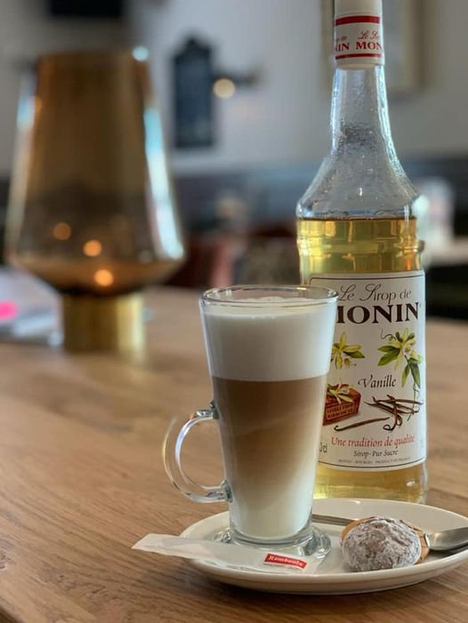
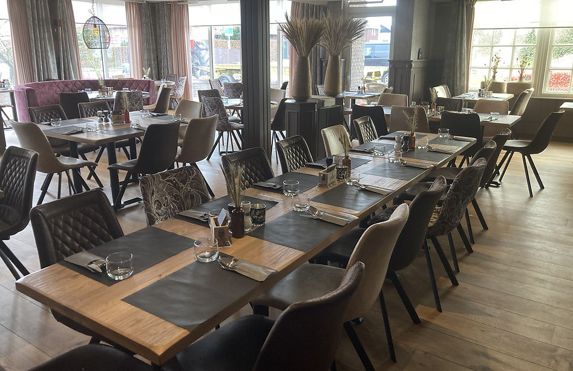
Een gezellige ruimte voor grote of kleine groepen. Informeer gerust naar de mogelijkheden, we denken graag met u mee.
Zakelijke of private lunches, diners, buffetten en barbecues.
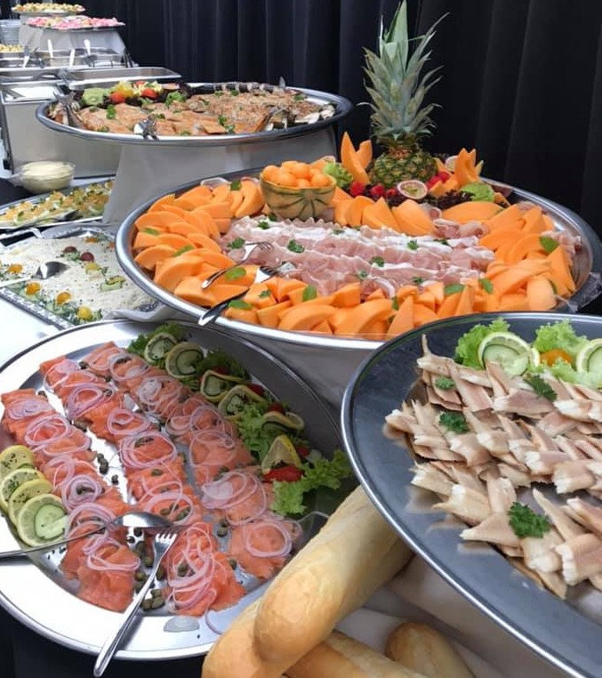
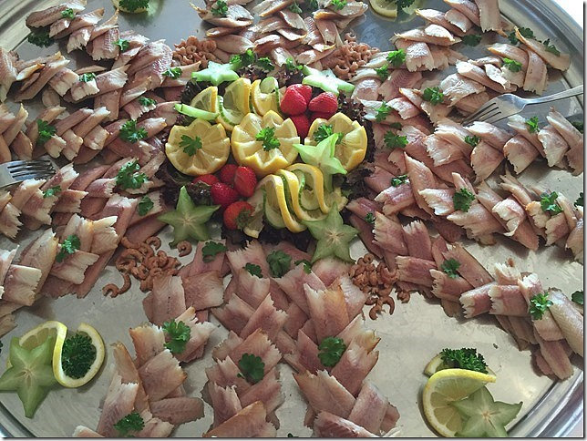
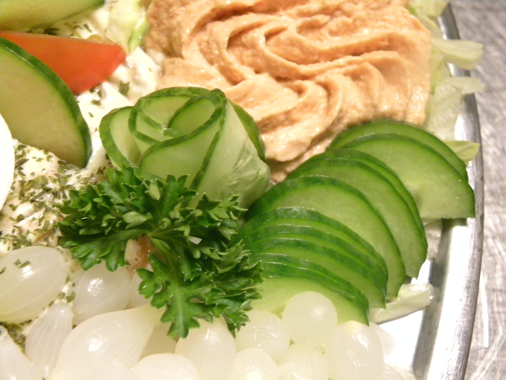
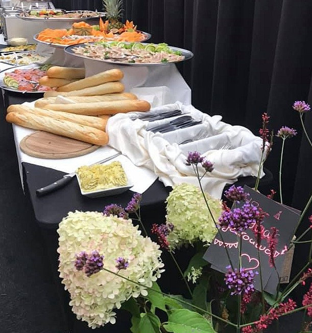
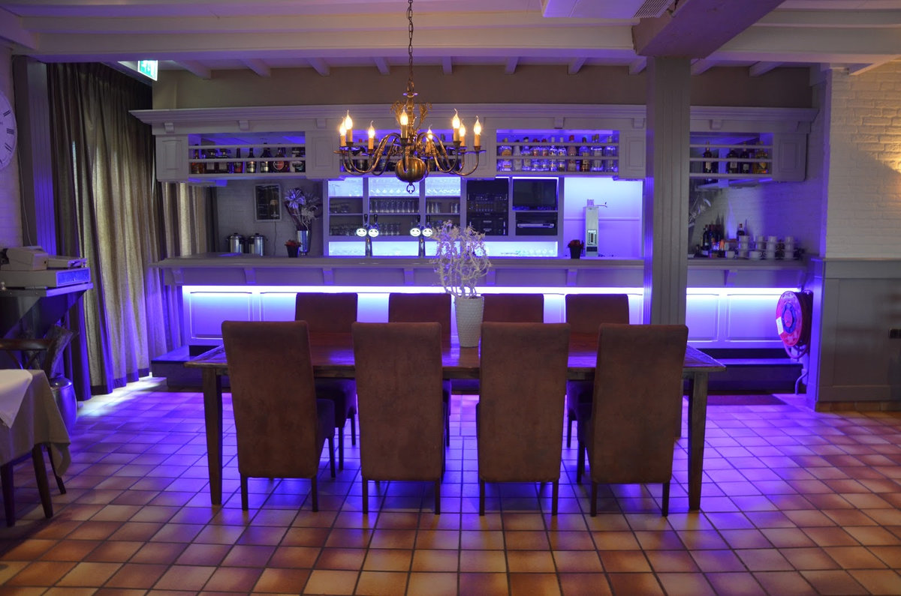
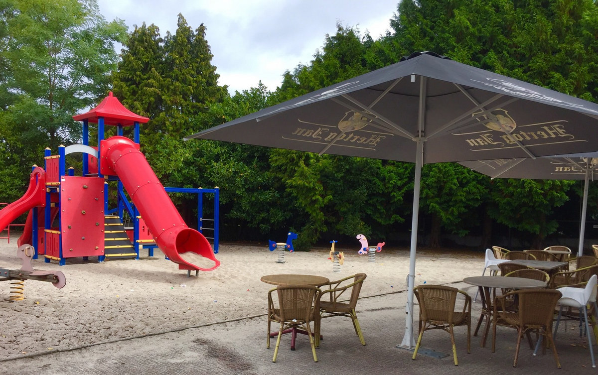
Voor de kids is er een mooie speeltuin. Parkeren kan ook prima in de buurt.
Restaurant, grand café en terras
Voor informatie, boekingen en reserveren: bel ons. Reserveren gaat telefonisch, niet via e-mail. Ook voor de feestzaal maakt u telefonisch een afspraak. In de Brabantse Kempen, makkelijk bereikbaar met de auto, met voldoende parkeergelegenheid in de buurt.